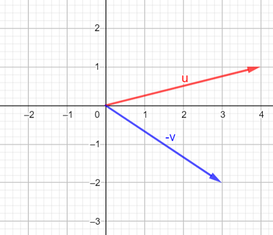
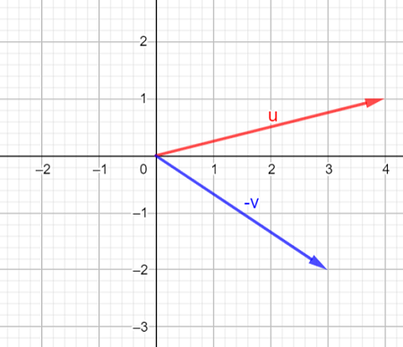

Domains and Graphing Basics
Coordinate Plane Quadrants

Precalculus is not as scary as it may seem. Do not worry. We got you :D
For the trigonometry formulas, please refer to the Trigonometry Page
Many concepts are repeated from Algebra 2, so they may seem familiar to you


AKA average rate of change


Ex. The inverse of f(x) = (√x + 1) - 2 is f(x) = (x+2) 2 - 1.
The restriction is x > -2. If x = -2, the original equation will be √-1 - 2 which is no solution


First equation is in quadratic form, second one is in vertex form


 

Click here for the distance formula

Matrix
Augmented Matrix


Use addition to solve the probability of the event.
Use multiplication to solve the probability of the event.


Used for calculus. Plug in the formulas below accordingly to solve the summation.

Definition of a derivative at a point x = c